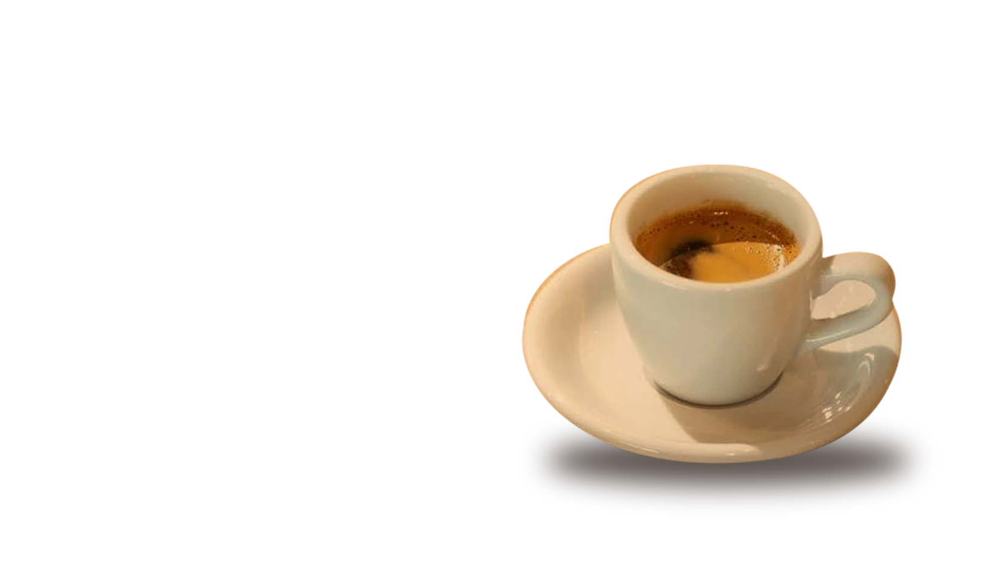

CAFFÈ SPECIALTY / 01
STICAZZI.
La vita è complicata.
Il caffè no.
Un espresso dal carattere deciso. Note di cioccolato intenso, nocciole tostate e un finale morbido.
Scopri le miscele01 / L’ESPRESSO
Poche storie.
Solo caffè.
Cioccolato fondente. Nocciole tostate. Un finale morbido ed equilibrato. Tutto carattere, zero complicazioni.
- 01 / CORPO
- Pieno
- 02 / NOTE
- Cioccolato e nocciola
- 03 / FORMATO
- In grani · 250 g

02 / IL CAFFÈ FILTRO
Meno fretta.
Più gusto.
Agrumi, miele e un finale pulito ed equilibrato. Il tempo per un buon caffè si trova sempre.
- 01 / CORPO
- Leggero
- 02 / NOTE
- Agrumi e miele
- 03 / FORMATO
- In grani · 250 g

03 / IL RITUALE
Un buon caffè.
Senza tante storie.
Un momento tutto tuo.
Prima del rumore, prima della fretta. Il calore della tazzina, il profumo del primo sorso. STICAZZI COFFEE nasce come concept da un’idea semplice: vale la pena rallentare e godersi le piccole cose di ogni giorno.
Scopri le miscele Un’ultima cosa04 / UNA PICCOLA PREMESSA
STICAZZI COFFEE
Prima il caffè. Poi, forse, ti ascolto.
Buon caffè. Senza scuse.